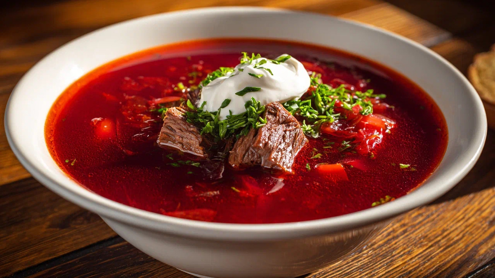

Борщ

Описание
Борщ - традиционный суп, основными ингредиентами которого являются свёкла, капуста, картофель и другие овощи. Благодаря свёкле борщ приобретает характерный насыщенный красный цвет и слегка сладковатый вкус.
Обычно борщ подают горячим со сметаной и свежей зеленью.
Ингредиенты
- 500 г говядины
- 2 средние свёклы
- 3 картофелины
- 1 морковь
- 1 луковица
- 300 г капусты
- 2 столовые ложки томатной пасты
- 2 зубчика чеснока
- 2 столовые ложки растительного масла
- 2 литра воды
- 1 лавровый лист
- Соль и чёрный перец по вкусу
- Свежий укроп или петрушка
- Сметана для подачи
Шаги приготовления
- Положите говядину в большую кастрюлю, залейте 2 литрами воды и доведите до кипения. Уменьшите огонь и варите около 1 часа.
- Очистите свёклу, картофель, морковь и лук.
- Нарежьте картофель кубиками, а капусту тонкой соломкой.
- Натрите свёклу и морковь на тёрке, мелко нарежьте лук.
- Разогрейте растительное масло на сковороде. Добавьте лук и морковь и обжаривайте около 5 минут.
- Добавьте свёклу и томатную пасту. Готовьте ещё 5-7 минут.
- Добавьте картофель в кастрюлю с мясом и варите около 10 минут.
- Добавьте капусту и варите ещё 5 минут.
- Добавьте обжаренные овощи, лавровый лист, соль и чёрный перец.
- Варите борщ ещё 10-15 минут на небольшом огне.
- Добавьте измельчённый чеснок, выключите огонь и дайте борщу настояться около 10 минут.
- Подавайте горячим со сметаной и свежим укропом или петрушкой.
Главная